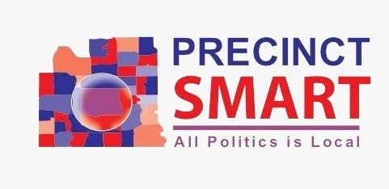

Electoral Analytics: Proposed CD 3 (Collin County Part)
Analysis by Ifte Islam PhD
Loading data...
Layer Controls
Precinct Layer
Voter Layer
Selection Tools
Rectangle
Polygon
Buffer
Radius:
10 miles
Battleground Precincts
Clear All
Click individual polygons to select them
Hold Shift + Click for multiple selection
Precinct Filter
Loading precincts...
All
None
Filters (Range %)
D
Democratic %
to
0% - 100%
R
Republican %
to
0% - 100%
Turnout %
to
0% - 100%
White %
to
0% - 100%
Black %
to
0% - 100%
Hispanic %
to
0% - 100%
Asian %
to
0% - 100%
Anti-Trump %
to
0% - 100%
Selected Precincts Summary
Select areas to view data
Voter Export
Min Democratic Votes:
1 or more
2 or more
3 or more
4 or more
5 or more
Voted in 2024:
All voters
Yes - voted in 2024
No - did not vote in 2024
Download Voters CSV
Loading voter data...

Democratic %
0-20%
20-40%
40-49%
50-60%
60%+
Points
Democrats
Republicans
Analysis by Ifte Islam PhD